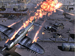

Friday, July 20 2007
Last month, we announced
the Steam Community, which will let you connect with friends and other gamers, create and join groups, and organize matches. We're adding the final polish now and are right on target to launch the beta version at the end of the month. More details on the way.
A note to owners of Half-Life 2 and Episode 1: If you buy the boxed retail version of
The Orange Box, you can simply hand-off the games you already own to a friend. Or, you can give away the games within Steam. When you install the Orange Box, Steam will identify the duplicate games and let you send them as gifts to a friend, which will enable them to download the games from Steam for free.
THQ joined Steam this week, kicking things off with three great games:
Company of Heroes (widely regarded as one of the best RTS's ever made),
Titan Quest (RPG) + the
Immortal Throne expansion, and
Full Spectrum Warrior + the
Ten Hammers expansion. You can
read more about the starting line-up.
If you're looking for a cool indie game to play this weekend, check out
Gish, the 2005 Independent Games Festival Grand Prize winner. It's a platformer set in subterranean sewers. You play as a ball of tar. Enough said.